A Pomodoro timer for your terminal that keeps track of what you work on, with daily goals, tasks, notes and a calendar next to the clock.
Open the Terminal app, paste this command and press Enter.
curl -fsSL https://focusoro.com/install.sh | shOr with Homebrew
brew install orocore/tap/focusoroOpen a terminal, paste this command and press Enter.
curl -fsSL https://focusoro.com/install.sh | shOpen PowerShell or Windows Terminal, paste this command and press Enter.
irm https://focusoro.com/install.ps1 | iexOr with Scoop
scoop bucket add focusoro https://github.com/orocore/focusoro; scoop install focusoroThen open a new terminal and type focusoro. Press h inside for every shortcut.
Looks its best in a modern terminal like Ghostty, iTerm2, WezTerm, Kitty, Alacritty, foot or Windows Terminal.
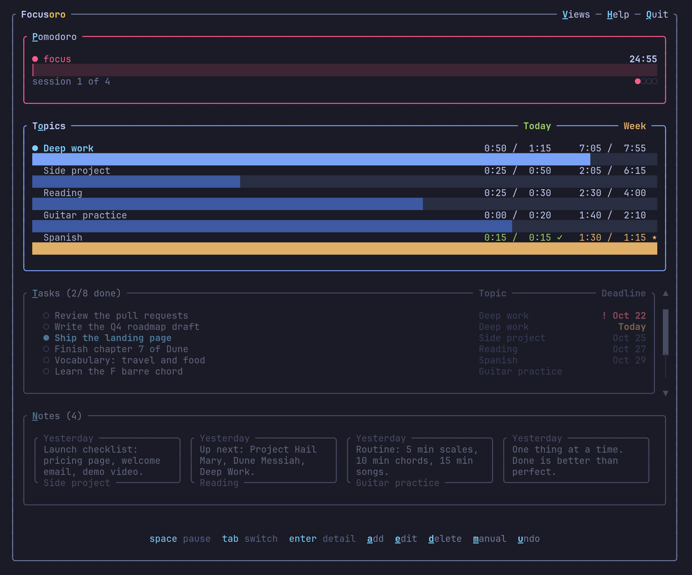
A real screenshot of the app.
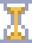
Pomodoro sessions, real breaks, and a zen mode that shows only the clock.
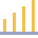
Each session is saved under its topic, next to your tasks, notes and important dates.
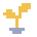
Daily goals, streaks and a report that shows how far you've come.
Everything happens in your terminal, with the keyboard or the mouse.
Open a report in your browser from the app. It compares your week, month or year with the previous one, shows how your goals are going and when you focus best, and lists every session. It works offline.
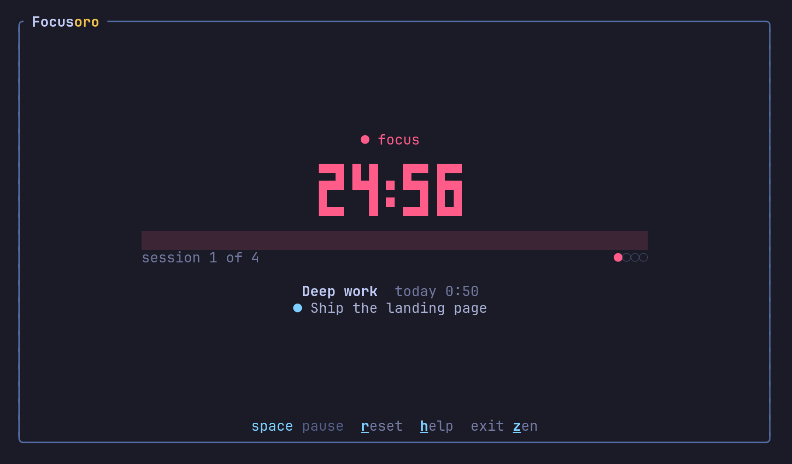
Only the clock, your topic and the task you're on. Nothing else on screen.
Press z during a session.
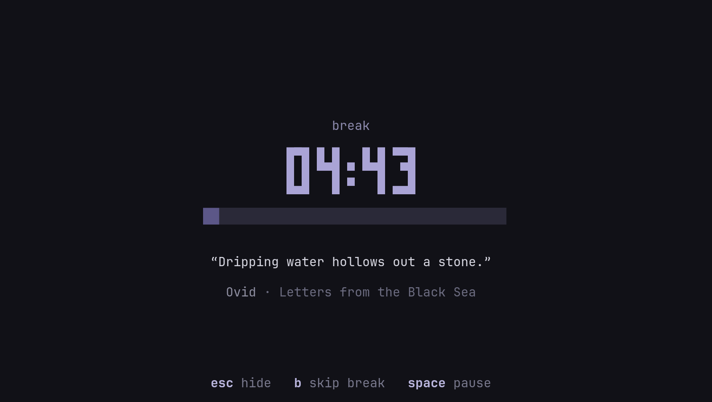
A quiet screen with a quote while you step away. You can add your own quotes, turn on short breaks to rest your eyes, or make breaks strict if you tend to skip them.
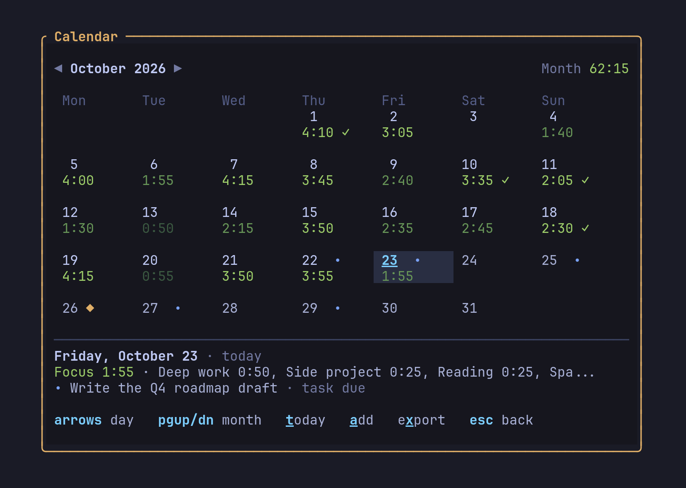
How much you focused each day, the days you met your goals, and your deadlines and important dates, with reminders. You can export it to Google Calendar, Apple Calendar or Outlook.
Press v then c.
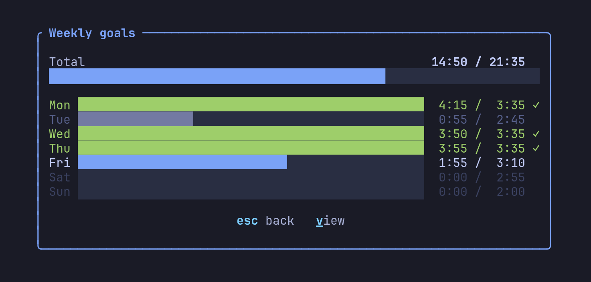
Set a goal per topic for each weekday and see how the week is going against it.
Press w.
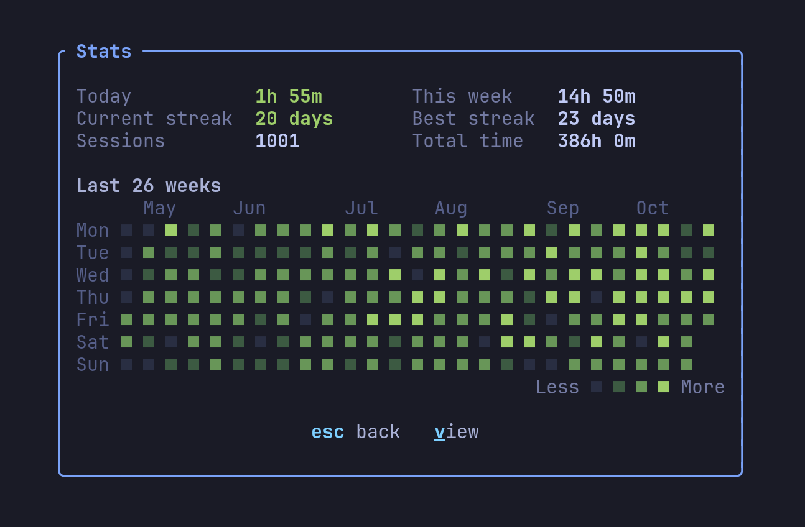
Today, this week, your current and best streak, and a heatmap of the last six months.
Press s.
Easy to start with, with more to it when you need it.
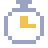
Focus sessions, short and long breaks, and auto-start. If the terminal closes mid-session, the time you worked is still saved.
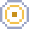
Split your time into work, projects, hobbies or studies, each with its own goal for every weekday.
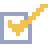
Pin the task you're on, set deadlines with shortcuts like fri or +3, and keep notes linked to topics.
Important dates with reminders, deadlines and your focus per day, with export to your calendar app.
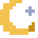
A calm break screen with quotes, optional micro breaks to rest your eyes, and strict breaks if you need them.
Streaks, heatmaps and a browser report with every session. Export your sessions to CSV anytime.
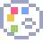
Tokyo Night, Catppuccin, Gruvbox, Nord, your terminal's colors or any theme you add, plus focus dimming and zen mode.
No account, no cloud, no tracking. Everything is saved as plain files on your computer.
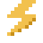
One native C++ program of about 5 MB that starts instantly and uses under 10 MB of memory. No Electron, nothing else to install. macOS, Linux and Windows, Intel and ARM.
Five built-in themes, your terminal's own colors, or any of the hundreds of themes made for Ghostty, Kitty, Alacritty or Windows Terminal. Choose “Add your own…”, drop the file in the folder that opens, and pick it.
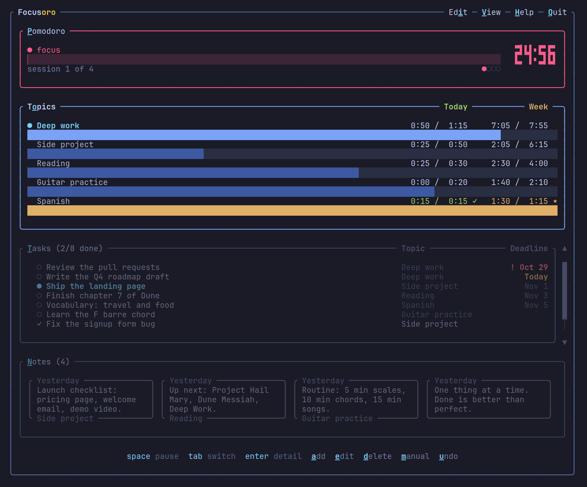
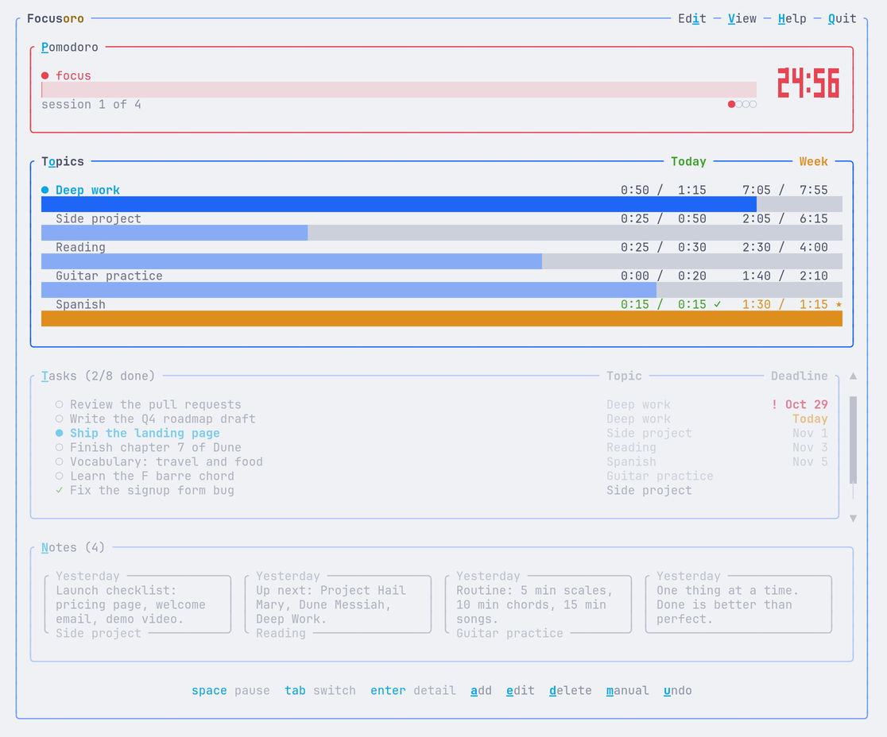
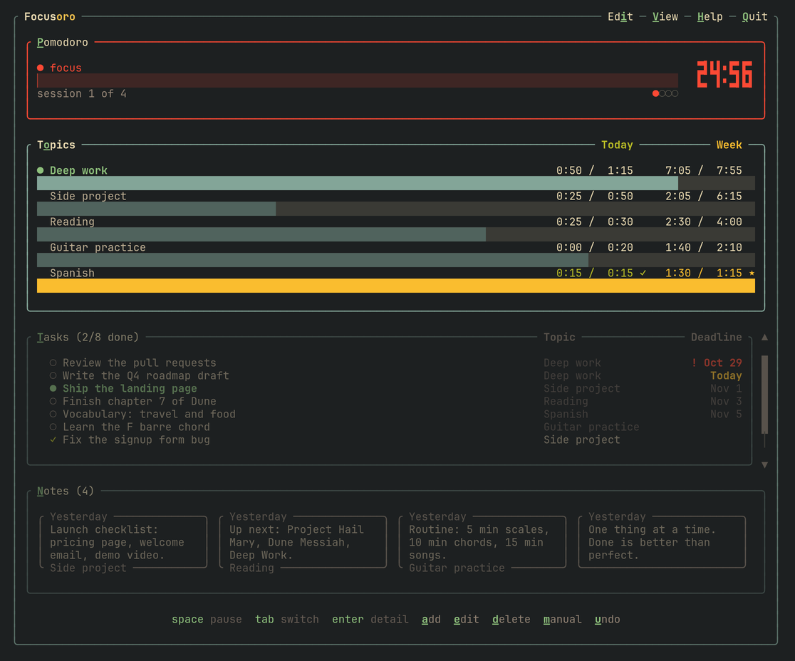
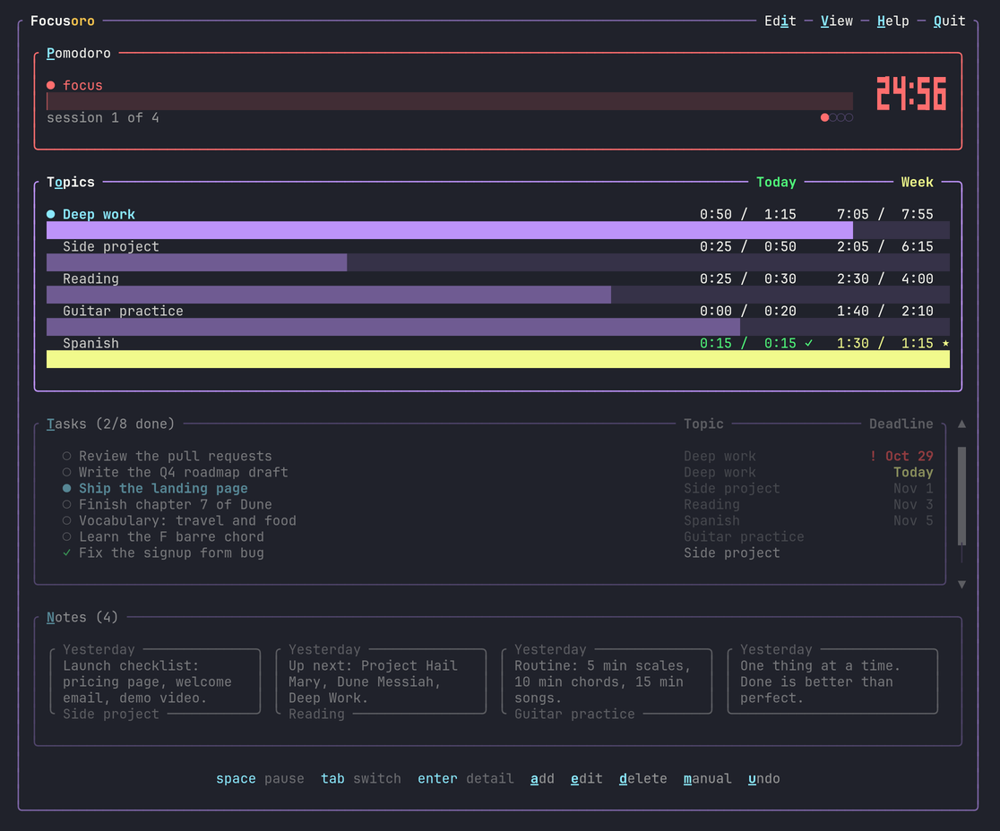